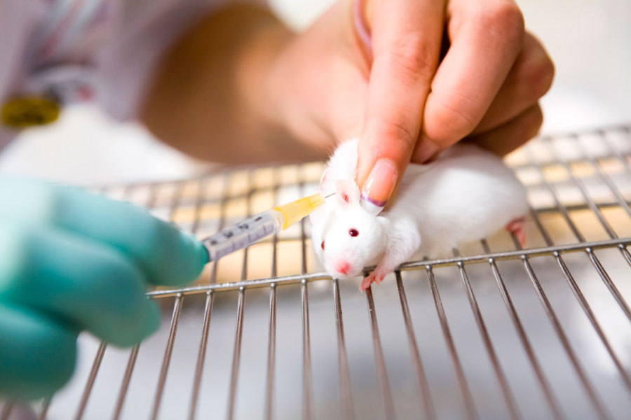

El destino de las vacas que cayeron de camión tras accidente
Volcó camión que transportaba vacas en Buenos Aires provocando la caída de los animales.
Haga click aquí
40 Vacas Escapan de un Matadero y Huyen
¿Lo arriesgarías todo si tu vida estuviera en juego? Estas 40 vacas lo hicieron, solo buscaban vivir su vida libertad.
Haga click aquí

Un Siglo de Sufrimiento
Experimentación en animales: 10 Experimentos Espantosos en Animales de los Últimos 100 Años.
Haga click aquí
Argentina: el 12% de la población no come carne
Una encuesta revela que la cantidad de personas que se suman al veganismo crece año a año.
Haga click aquí